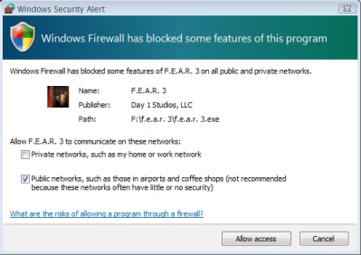
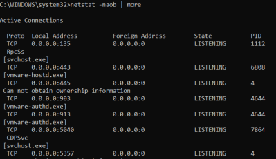

Where Does identification Occur?
Where Does identification Occur?helpful zones for gathering events are:
◇
Network perimeter detection (Identification occurs on network)
▪ Firewalls, routers, external-facing network-based IDS, IPS, DMZ systems, ...
example: We can use an internal IDS sensor to capturef network activity from a scanning tool. If we find non-standard behavior like a Syn/RESET response instead of the usual Syn/ACK in the logs. is quite likely that the attacker is using a tool to craft custom packets and this mean that at least a machine in the network is been compromised.
◇
Host perimeter detection (Identification occurs when data enters or leaves a host)
▪ Personal firewalls / IPS, local firewalls, port sentry tools, ...
example: personal firewall alerting us to the fact that an exe is trying to listen on the network.
 ◇
System-level (host) detection (Identification occurs based on activity on the host itself)
▪ Antivirus tools, endpoint security suites, file integrity tools, user noticing strange behavlor, ...
example:  ◇
Application-level detection ▪ Application logs (Web App, App Server, Cloud Service, ...). Resources for reviewing logs for other commonly used applications:
- Oracle:
http://docs.oracle.com/cd/E27559_01/admin.1112/e27239/audit.htm - Apache:
http://httpd.apache.org/docs/currentf/logs.html - llS:
http://support.microsoft.com/kb/324091